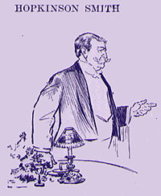

|  HOPKINSON SMITH said: MR. CHAIRMAN and Ladies and Gentlemen: I have listened with very great pleasure to-night to a great many speeches that have been made on this floor. I have heard an honorable professor from Columbia speak of Mark Twain as the man who used the best English language of any of our men who write; I have heard Mr. Gilder speak of him as in his manhood, Mr. Carnegie indulging in that same line of talk. All men love the man. A number of our people here have indulged in the fact that he is the greatest humorist living. Now, do you know that Mark Twain has never struck me as being a humorist. (Laughter.) There is something infinitely greater than making you laugh, and that is, if you will permit me, making you shed tears. I remember the day, a great many years ago, when the first thing I ever read of Mark's came on those lines; I have no doubt he has forgotten it; I don't know that he has ever thought sufficient of it to put it in his published works; if it is there, I don't remember having seen it. But just as Charles Dickens will live in the history of the world and the hearts of the people because of Little Nell, because of the sorrows of Peggoty, and others of that character, so will Mark Twain live in all the things he has written. It is late, and most of you want to go home, but I am going to tell you a story in which an old colored woman told him, and which he, in his inimitable way, has told me. This old woman lived in New Haven, and came in every day, in the morning, and Mark said to her one day: "Aunt Rachel, have you ever had any trouble?" And she said: "Marse Clem, have I ever had any trouble? Now, I going to tell you. Now, Marse Clem, I was born in Maryland and my old mammy and I used to have plenty of trouble, and I just growed up with the hens and the chickens; and I had my own little teeney Henery, and he fell down once and had a great scar on his wrist. Well, just 'fore the war I was down with my massa, that was in North Carolina, and along came the time when they sell all the animals on the place and all the niggers on the place, and they knocked us all down in Richmond; they sold my old man and they sold my Maria and then they sell my little Henery; but when they came to my little Henery I say to the man, 'Go 'way,' and I beat him over the head with a chain. Fourteen years ago, Marse Clem, and from that time to this I never seen my little Henery, and when the war broke out everybody went away and left us on the place; and then the Union soldiers came in, and I was in that old kitchen garden, where you was, Marse Clem, and then one day down come the colonel, and I had heard about it, and I went up to him and I said to him: 'I want to tell you, boss,' I says, 'I had a little boy once,' and I tole him about that, and he says, 'How long ago is that fact?' I says, 'Fourteen years,' and he says, 'Why he wouldn't be little any more.' I said, 'I didn't 'member that.' Pretty soon after that I had a boiling in the kitchen, and they came in with a nigger man. You know I could never get along with niggers that blow on a horn, and this fellow had a horn, a black fellow, and I said, 'Get 'way, rubbish; don' wan' you.' That young man stopped, and I said, 'I wan' you to understand I don't want my place filled with tramps; I want them for blue hen chickens'; and I see that young man stop and he told them to tell the colonel. He went back till morning. Well, I was getting breakfast when a black face bent over mind and my hand began to tremble, and I say, 'Boy, if you ain't my Henery what are you doing with that scar on your wrist?' The Lord be praised, Marse Clem, I got my own again." (Applause.) |